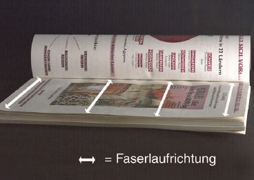
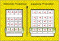
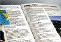
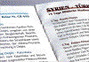

WELLBLECHEFFEKT
|
Der Wellblecheffekt ist eine Fehlererscheinung,
die im Rollenoffset bei sog. liegender Produktion
(Erklärung siehe unten) auftritt. Die
Laufrichtung des Papiers und somit auch die
rollenoffsettypische Wellenbildung (siehe dort)
verläuft dabei senkrecht zum Bundsteg des
fertigen Produkts bei Hochformat-Produktionen (Abb.
1 und Abb. 2). Durch die Klebebindung wird die
Wellenbildung im Bundsteg fixiert. Dies führt
zu Verspannungen im Buchblock, zu schlechtem
Aufschlagverhalten und zum vorzeitigen Aufbrechen
der Klebebindung.
|

|
Abb. 1: Wellblecheffekt beim Rollenoffset.
|
|
|
|
Mögliche Ursachen:
|
|

|
|
Abb. 2: Prinzipskizze: „stehende
Produktion“ und „liegende
Produktion“.
|
|
|
|
|
|
Abb. 3: Aufbrechen der Klebebindung bei einem
Reiseprospekt.
|
|
|
|
|
|
Abb. 4: Extrem schlechtes Aufschlagverhalten der
beanstandeten Prospekte.
|
|
|
|
|
|
Abb. 5: Deutlich erkennbare Spannungen im
Bereich der Klebebindung.
|
|
|
|

|
|
Abb. 6: Niedergedrückte und verspannte
Seiten eines Reiseprospekts.
|
|
|
|

|
|
Abb. 7: Vergrößerter Ausschnitt der
verspannten und niedergedrückten Seiten eines
Reiseprospekts.
|
|
|
|

|
|
|
|
|
|

|
|
|
|
|
|
|
Der Wellblecheffekt tritt nur bei „liegender
Produktion“ auf. Im Gegensatz zur „stehenden
Produktion“ sind hierbei die Seiten auf der Druckform
zur besseren Formatausnützung im Querformat und nicht
im Hochformat angeordnet (Abb. 2).
Aufgrund dieser Begebenheit verläuft die
Faserlaufrichtung des Papiers bei den gefertigten Produkten
quer zum Bundsteg.
Werden solche Produkte mit Dispersionsklebstoffen gebunden,
weisen sie aufgrund des Saugverhaltens der ausgetrockneten
Papiere gegenüber dem wässrigen Dispergiermittel
bereits kurz nach der Bindung eine Wellenbildung im Bundsteg
auf.
In der Regel weisen aber die Bücher und Broschuren zu
diesem Zeitpunkt vor der Auslieferung an den Kunden noch
eine relativ gute Qualität in der Planlage und Bindung
auf. Erst beim Kunden, nach Entnahme aus der Verpackung wird
das Mikroklima des Buchblocks durch Reklimatisierung
verändert. An den nicht fixierten, freien Enden des
Buchblocks erfolgt durch eine Feuchtigkeitsaufnahme aus der
Umluft eine ungehinderte Dehnung der Papierfaser,
während im Bundsteg Schubspannungen an der
Grenzfläche Papier/Klebstoff verursacht werden. Je
stärker dabei die Wellenbildung ist, desto
größer wird die Spannung im Bundsteg. Schlechtes
Aufschlageverhalten, Nichtplanlage und ein mögliche
Beschädigung der Klebebindung sind die Folge.
Das Auftreten der Wellenbildung kann folgende Gründe
haben:
Leichtgewichtige Papiere neigen besonders zur Wellenbildung,
was sich vornehmlich bei hohen Farbanteilen auswirkt.
Als papierbedingte Einflüsse auf die Wellenbildung sind
das Dehnungs- bzw. Schrumpfungsverhalten, die
Biegesteifigkeit quer und die Ausgangsfeuchte bekannt.
Papiere mit starkem Dehnungs- bzw. Schrumpfungsverhalten
reagieren dabei stärker mit Wellenbildung.
Auch eine geringe Biegesteifigkeit in Querrichtung
begünstigt die Schrumpfung der Papierbahn unter dem
Einfluss der Bahnspannung und der Hitzeeinwirkung.
Es ist aus Untersuchungen bekannt, dass Papiere mit einer
Ausgangsfeuchte von > 50 % relative Feuchte
verstärkt mit Wellenbildung reagieren.
Ungünstige Einstellungen der Heißlufttrockner (zu
hohe Temperatur) verursachen eine übermäßige
thermische Belastung des Papiers und üben einen
ungünstigen Einfluss auf die Wellenbildung aus.
Bei zu hoher Bahnspannung steigt die Gefahr der
Wellenbildung.
Falls mit Rückbefeuchtungsaggregaten im Rollenoffset
produziert wird, kann eine zu hohe
Rückbefeuchtungsmenge eine Verstärkung der
Wellenbildung hervorrufen. Als empfohlener Grenzbereich gilt
dabei eine relative Feuchte im Papier von 30 % bis 35 % nach
dem Druck.
|
Mögliche Abhilfen:
|
|
Um den Wellblecheffekt wirklich zu vermeiden, ist es
generell empfehlenswert, Drucke aus liegender Produktion
nicht mit einer Klebebindung zu binden.
Untersuchungen haben gezeigt, dass der Wellblecheffekt bzw.
die Wellenbildung durch eine sensible Einstellung von
Rückbefeuchtungsanlagen, sofern Rollenoffsetmaschinen
damit ausgestattet sind, tendenziell zu reduzieren ist.
Weiterhin kann die Wellenbildung mit den im Kapitel
Wellenbildung genannten Maßnahmen reduziert
werden.
|
Beispiel(e):
|
|
Falsche Laufrichtung bei einem im Rollenoffset
gedruckten Reiseprospekt:
Der Druck eines Reiseprospektes erfolgte 4/4-farbig im
Heatset-Rollenoffset. Gedruckt wurde dabei auf einer
„64-Seiten-Maschine“ im „liegenden“
Format. Die Bindung des Prospektes erfolgte mittels
Dispersionsklebstoff.
Nach der Auslieferung sandten zahlreiche Endkunden dem
Reiseveranstalter beschädigte Prospekte zu und
reklamierten das Aufbrechen der Klebebindung nach nur kurzem
Gebrauch (Abb. 3).
Untersuchungen in der FOGRA ergaben, dass die Verspannungen
im Bund aufgrund des Wellblecheffektes - in Verbindung mit
der Feuchteaufnahme aus dem Dispersionsklebstoff - so
groß waren, dass der Prospekt nach dem Öffnen
immer wieder von alleine zugeklappt ist. Ein Aufschlagen mit
planliegenden Seiten war wegen der Verspannungen im Bund nur
durch Niederdrücken der aufgeschlagenen Seiten
möglich (Abb. 4 und Abb. 5). Um die Informationen im
Bundbereich lesen zu können, mussten die Seiten sogar
gewaltsam nach unten gepresst werden (Abb. 6 und Abb.
7).
Diese Umstände führten zum vorzeitigen Aufbrechen
der ansonsten korrekt ausgeführten Klebebindung. Der
Hauptgrund für die aufgetretenen Probleme lag also in
der „falschen“ Laufrichtung der Drucke. Bei
„stehender“ Produktion wäre die Wellenbildung
parallel zum Bund verlaufen, was weitaus weniger Spannungen
im Bereich der Klebebindung und verbessertes
Aufschlagverhalten zur Folge gehabt hätte.
|
Allgemeine Hinweise:
|
|
Für den Reklamationsfall:
Druckausfallmuster sicherstellen.
Unbedruckte Papiermuster und unbedruckte Vergleichsmuster
sicherstellen (ca. 20 Blatt DIN A4).
Produktionsdaten protokollieren.
Ausgangsfeuchte des Papiers bestimmen.
Ergänzende Literatur:
STADLER, P:
Mechanisch Erfassung von Spannungen in klebegebundenen
Druckerzeugnissen bei Veränderung des Mikroklimas.
München: FOGRA, 1985 (4.026) - Forschungsbericht
FALTER, K.-A.; SCHMITT, U.:
Einfluss der Hitzeeinwirkung beim Druckprozess auf die
Festigkeitseigenschaften und die
Dimensionsveränderungen des Druckpapiers.
München: FOGRA, 1989 (4.035) - Forschungsbericht
FALTER, K.-A.; KIRMEIER, M.:
Erfassung der Wirkungsweise von Rückbefeuchtungsanlagen
in Rollenoffsetmaschinen.
Wiesbaden: Bundesverband Druck E.V., 1995, -
Informationen
|
|
|
|
|
|
|
Kontakt:
stadler@fogra.org
|
Wel-sta-200112
|